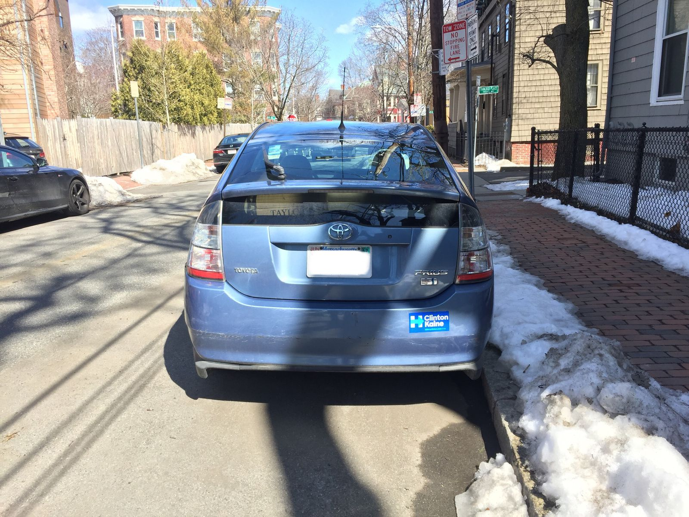
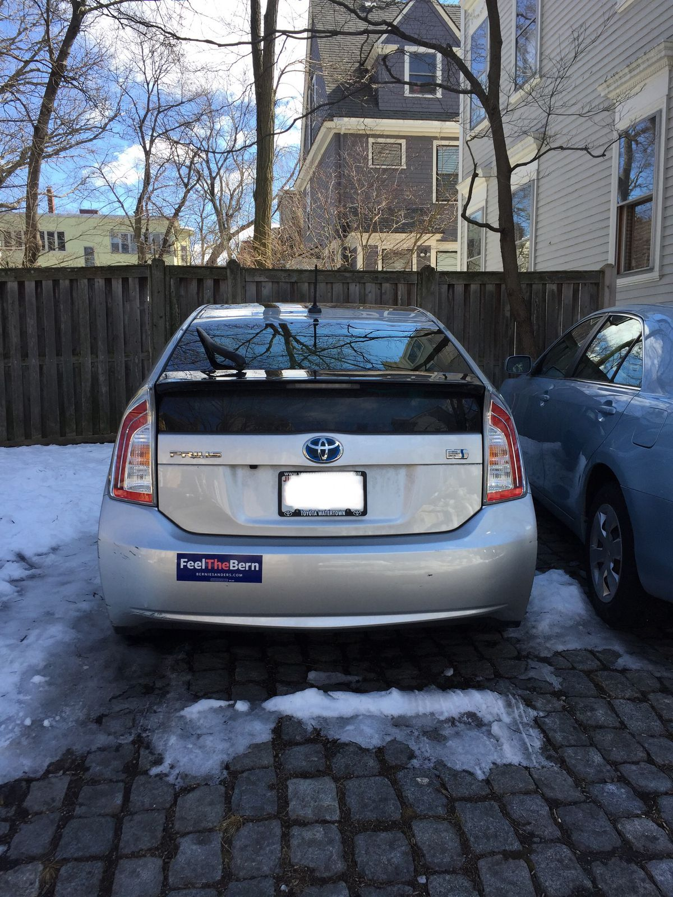
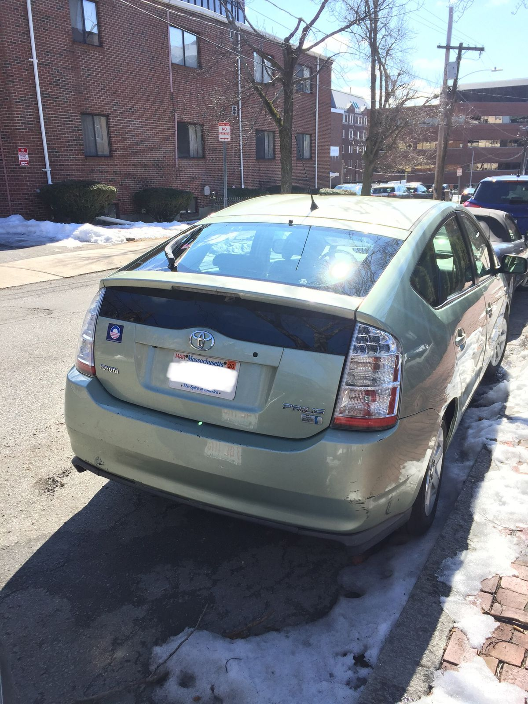

Relaxing Afternoons and the Progressive Prius
A major goal for my trip is to spend a lot of time doing nothing. I want to forget what it feels like to be always busy, always rushing to the next thing. With an empty calendar and being far from home, I will have a great chance to do just that.
Still in Boston, I got a brief taste this afternoon. For a couple of hours, I wandered the streets of Cambridge near Harvard Square in search of Prius's with progressive bumper stickers. To answer your question, I run an instagram account called Progressive Prius. I first had the idea a few years ago when I saw a blue Prius with an Elizabeth Warren bumper sticker drive by a Whole Foods in Cambridge. The car right behind it was another blue Prius with an Elizabeth Warren bumper sticker.
This afternoon, I collected a wonderful FIVE progressive Prius pictures! And I had nothing pressing on my mind when doing it. At one point, I stopped by a liquor store whose owner Mike enjoys wine, socialism, and cats. When I told him about my account and what I was doing, he gave a hearty chuckle (and follow). He was skeptical that the owners of these cars are actually progressive. Whether they live up to the account name or whether their stickers and cars are a cover for PINOs (Progressives in Name Only), we will never know.


